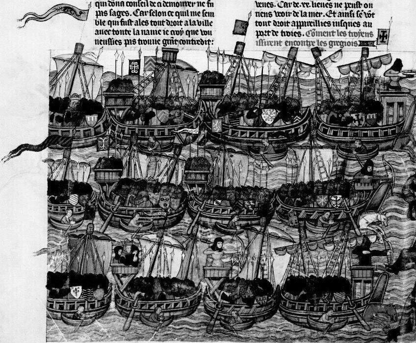

Шёл корабль, своим названьем гордый,
Океан стараясь превозмочь.
В трюме, добрыми мотая мордами,
Тыща лошадей топталась день и ночь.
Борис Слуцкий «ЛОШАДИ В ОКЕАНЕ»
Что те места тебе навеют,
Пускай не рвется сразу на уста
Мечту тщеславие светское рассеет,
Пятой своей растопчет суета.

«Когда крестоносцы и венецианцы увидели греков, которые вооруженными вышли на берег, чтобы их встретить, то они посовещались и дож Венеции сказал, что он выступит вперед со всеми своими людьми и с божьей помощью высадится на берег. И тогда он взял свои нефы, и свои галеры, и свои юиссье и во главе флота двинулся вперед; потом они взяли своих арбалетчиков и своих стрелков из лука и поставили их на носу каждого корабля, дабы очистить берег от греков. Когда они построились таким образом, то двинулись прямо к берегу. Когда греки увидели, что пилигримов не взять на испуг и нельзя им помешать подойти к берегу, и когда увидели, что те приближаются к ним, они отступили, не отважившись выжидать их, так что эскадра подошла к берегу; и как только она подошла к берегу, все рыцари выехали из юиссье уже на конях; ибо юиссье были устроены таким образом, что каждый имел дверцы, которые легко отворялись, а потом перебрасывался наружу мостик, по которому все рыцари могли сойти на землю, уже восседая на конях. Когда эскадра подошла к берегу и греки, которые отступили назад, увидели, что крестоносцы сошли на землю, то были повергнуты в сильное смятение. А ведь это были те самые люди, эти греки, которые взялись защищать берег и которые похвалялись перед императором, что пилигримы никогда не ступят сюда, пока они, греки, находятся здесь. Выехав из юиссье, рыцари тотчас начали преследовать этих греков, и они гнали их вплоть до какого-то моста, который был на краю города; на этом мосту были ворота, через которые греки бежали в Константинополь.»
Робер де Клари. Завоевание Константинополя. — М.: Наука, 1986 Глава XLIII. Перевод М.А.Заборова. (Находится на замечательном сайте http://militera.lib.ru/ )
«И стояло прекрасное утро, солнце только что взошло; и император Алексей на другой стороне ждал их со множеством своих отрядов и многолюдным войском. И вот трубят трубы, и каждая галера была привязана к юиссье, чтобы переплыть более безопасно на другую сторону. Никто не спрашивал, кому выступать вперед первому; кто мог раньше, раньше и причаливал. И рыцари выходили из юиссье и прыгали в море, погружаясь по пояс в полном вооружении, с опущенными забралами и с мечом в руке, и добрые лучники, и оруженосцы, и арбалетчики — все были на своем месте, где случилось пристать к берегу. И греки прикинулись, будто собираются сопротивляться, но как только были нацелены копья, греки обратили тыл и предоставили им берег. И знайте, что еще никогда никакой порт не был взят столь славно. Тогда моряки начали отворять дверцы юиссье и перебрасывать мостики; и стали выводить коней; и рыцари начали вскакивать на коней, и боевые отряды начали строиться, как надлежало»
Geoffroy de Ville-Hardouin, Conquête de Constantin. (120З)
«Будучи также изъ семейства дромоновъ, онѣ имѣли просторный трюмъ, нарочно приспособленный для перевозки лошадей, для чего въ кормѣ надъ ватеръ-линіей y нихъ было устроено особое окно, чрезъ которое вводились лошади. Догадка эта основывается на томъ, что такія же приспособленія имѣлись на usiacis XII, XIII и XIV вѣковъ; y нихъ huis (дверь) отворялась въ кормѣ и по минованіи надобности запиралась плотно и конопатилась. Подтвержденіе такому предположенію встрѣчается въ отчетахъ по снаряженію флота для крестоваго похода предпринятаго Людовикомъ IX, когда на одинъ нефъ можно было помѣстить 50 лошадей. Вся разница между шеландами—usiacis и нефами состояла кажется въ томъ, что первые не были такъ велики и не могли забирать такого количества лошадей какъ нефы и принадлежали къ разряду судовъ длинныхъ, хотя и грузовыхъ.»
Боголюбов, История корабля, с.162
Юиссье — военно-транспортные парусные корабли с глубоким трюмом, в который по перекидному мостику через дверцы в кормовой части (huis—отсюда и наименование данного типа судов) можно было прямо с причала вводить коней и таким же образом выгружать их на берег.
У к с е р ы были въ зиачительномъ употребленіи въ Каталоніи и на югѣ Франціи въ ХIII и XIV вѣкахъ. Это были также галеры, конструкціей своей походившія на галеры— usiacis (huissier no французски), почему въ кастильскомъ флотѣ ихъ называли usser, usserius; они вмѣщали въ себѣ по 40 лошадей. Такая конюшня должна была имѣть до 40 ф. длины, a вся уксера въ длину доходила до 140 фут. при 30 фут. ширины и 23 ф. (7 м. 49 с.) вышины. Въ хроникѣ короля кастильскаго дона Педро говорится, что когда онъ собирался войной на короля арагонскаго, то въ составъ своего флота включилъ очень большую галеру, носившую названіе укселы (I'uxel). Онъ отнялъ ее у Мавровъ и употреблялъ при осадѣ Аржезираса. Мавры имѣли не только эту уксеру, но много другихъ, построенныхъ ими одновременно и употребляли ихъ для перевозки многочисленнаго войска изъ Сеуты въ Гибралтаръ и Алжезирасъ. Кромѣ людей, каждая уксела должна была вмѣщать подъ палубой по 40 лошадей. Ha взятомъ укселѣ донъ Педро поставилъ три башни: одну на носу, другую на кормѣ и третью по срединѣ. Хроника сохранила даже имена рыцарей, командовавшихъ башнями, вмѣщавшихъ по сту восьмидесяти солдатъ, не входившихъ въ составъ судоваго экипажа, управлявшаго парусами и веслами. Кампаньи (Campagny), въ своихъ историческихъ запискахъ,упоминаетъ также объ уксерахъ, говоря, что этотъ разрядъ гребныхъ судовъ, упоминаемый часто въ средневѣковыхъ хроникахъ, былъ гораздо массивнѣе большихъ галеръ. Во время сраженій ихъ помѣщали обыкновенно въ центрѣ линіи баталіи. Къ сожалѣнію, объ уксерахъ нѣтъ никакихъ болѣе подробныхъ свѣдѣній, по которымъ можно было бы судить точнѣе о ихъ вооруженіи. Надо полагать, что оно походило на вооруженіе современныхъ галеръ, что же касается до башенъ, то уксера дона Педро кажется составляла исключеніе.